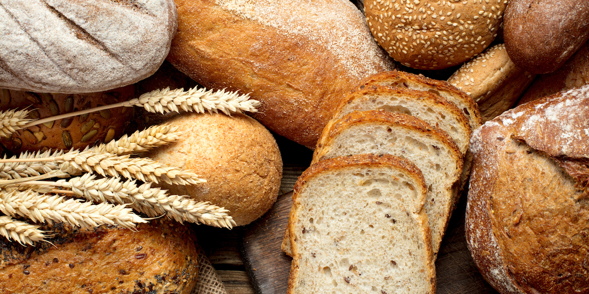

| PÁGINA INICIAL* | SOBRE NÓS | HISTÓRIA | NOSSO BAIRRO | PRODUTOS | CLIENTES | FORNECEDORES | CONTATO |

A alimentação é uma das coisas mais importantes no nosso dia dia,
portanto a gente não pode se deixar levar pelo famoso "tanto faz",
não é mesmo?!
Por isso, a panificadora Gran Trigo busca oferecer uma linha
completa de pães, visando proporcionar nutrientes
e sabor para seu café da manhã, da tarde, ou qualquer hora do dia.